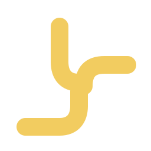

PRESENTATION DESIGN + MOTION + DEVELOPMENT
Wahaj — Interactive Brand Presentation
Designed and produced end to end,
including the embedded films.
I create motion graphics, visual stories and web experiences—bringing creative direction and code together with AI-assisted workflows.
Promotional films, animated moments and product visuals. Each project tells a different story.
Designed and produced end to end,
including the embedded films.
A job-search experience,
from interface to introduction.
Short animations created for YouTube videos and other content. Product studies, technical concepts and animated interfaces.
Responsive frontends and practical software projects. Explore the experience, then look under the hood.

فرصتك القادمة تبدأ هنا.A thoughtful journey.
A clearer next step.
A complete Arabic marketing frontend for a job-search assistant. Six responsive pages, right-to-left layouts, animated product sections and interactive FAQs.
My role: frontend development. Additional backend contributions were made outside this frontend repository.
A campaign dashboard connecting keyword-matching comments with public and private replies through the Meta Graph API. Includes webhook validation and duplicate-event handling.
Explore repository ↗A Java service for listing and adding employees, with unit and HTTP tests. Built during the HPE Software Engineering Job Simulation on Forage.
Explore repository ↗I’m Mohamed, a Computer Systems Engineering student based in Gaza, Palestine. I combine AI-assisted creative production with frontend development and programming.
I work from a clear brief, explore visual directions and refine the details—pacing, transitions, layout and consistency—until the work fits its purpose.
View my CV ↗Computer Systems Engineering · In progress
Second year · Average: 94.1%
Motion graphics · Animation · Visual storytelling
Frontend development · Python · C
Prompt development · Iterative refinement
HPE Software Engineering Simulation · Forage
Web Application Penetration Testing · 30 hours
Hands-on practice in authorized training labs
Native Arabic · English B2+ (self-assessed)